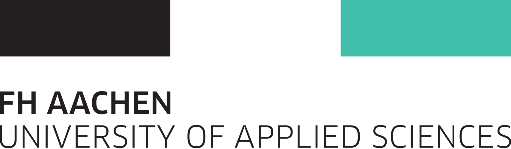

Master of Science in Data Science
RWTH Aachen University
Apr 2024 – Expected 2027
Courses Taken
- Computer Vision
- Reinforcement Learning & Learning-Based Control
- Machine Learning
- Action and Planning in AI
- Virtual Reality I
- Seminar: Learning Based Control
- Lab: Efficient AI with Rust
- Introduction into Data Science
- Algorithmic Foundations of Data Science
- Mathematics of Data Science
- Mathematics of Signal and Image Processing
- Data Analysis and Visualization
- Ethics, Technology and Data
Bachelor of Science in Software Engineering
University of Duisburg-Essen
Oct 2020 – Mar 2024 · 3.5 years · Final Grade: 1.7
Courses Taken
- Data Structures and Algorithms
- Computer Network
- Network Security
- Probability and Statistics
- Discrete Mathematics
- Digital Image Processing
- OOP with C++
- Mathematics 1 & 2

Preparatory College (Studienkolleg)
FH Aachen — Freshman Institute
Oct 2019 – Sep 2020 · 1 year
Courses Taken
- Mathematics
- Physics
- German
- English